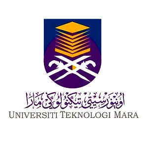
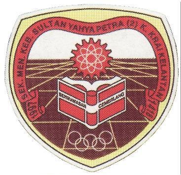
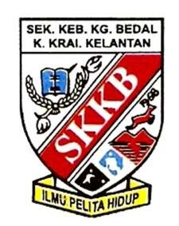

Education Page
Home
Biodata
Experience
Education
Family
Gallery
Contact Me

1. Higher Education (October 2020 - present)
- Bachelor's Degree of Business Administration (Hons.) Marketing.
- Studying at UiTM Kelantan Branch, Kota Bharu Campus.
- CGPA: 3.90
2. Second Highest Education (May 2017 - February 2020)
- Diploma in Business Studies.
- Studied at UiTM Kelantan Branch, Machang Campus.
- CGPA: 2.97
3. Third Highest Education (January 2012 - December 2016)

- Studied at Sekolah Menengah Kebangsaan Sultan Yahya Petra 2.
- PT3 (2014): 5A, 3B, 1C & 1E.
- SPM (2016): 3A, 6B & 1E
4. Fourth Highest Education (January 2006 - December 2011)

- Primary School: Sekolah Kebangsaan Kampung Bedal.
- UPSR (2011): 4A & 1B.